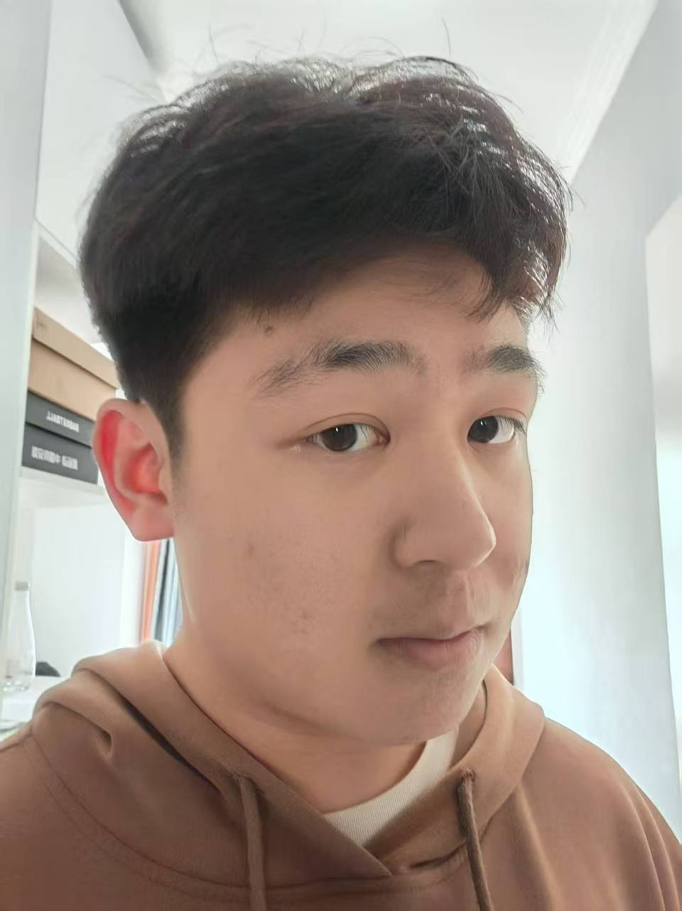

“这是我新烫的头发，好看吗”
“？”
“？”
“？”
群员们纷纷发来嘲笑并把图片做成了表情包。
蒋低下了头，叹气。
“还是改变不了什么吗……”
蒋从小就是个可怜的男孩，不受家里人喜欢，他的家人更喜欢他的弟弟，将所有的重心都放到他弟弟身上，没有人在意他。但是他并没有自暴自弃，反而养成了乐观的性格。到了大学这种情况也没有改善，反而总受到同学的嘲笑。
于是他下定决心开始改变，在今年的春节他去烫了头发，发到宿舍群里想要得到大家正向的反馈，可是结果与平常没什么两样。他开始自卑，开始特立独行，不再在意他人的眼光，可是在别人眼里他更像是疯魔了，像个神经病。同学们开始疏远他，孤立他。他也不以为然，只是默默做自己的事，只是将他身边人对他做的事一件件记在心里。他憎恶他们，为什么要这样攻击他，他难道就不是一个鲜活的生命了吗？他下定决心开始报复这个世界，将身边的人所对他做过的全部还回去，他要让那些曾经看不起他的人对他刮目相看，让曾经毒害他的人收到他们应得的报复。